DSE Circle Geometry Grader
Reviewed Problems
3
Revisions Needed
0
Concept Mastery
100%
Page 1 Worksheets
Q8 Circle geometry and similar triangles
Page 1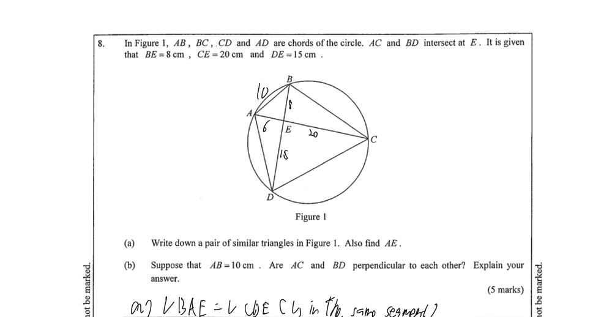
Student Working Steps
Step 1
✓ Correct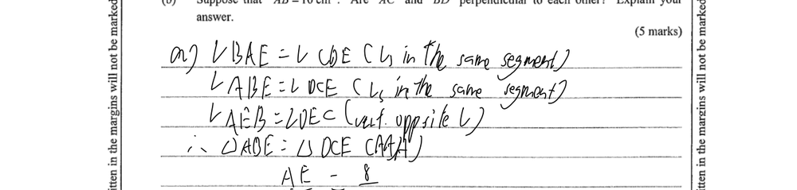
HKDSE Exam Tips & Suggestions
Redundant Step. The question asks you to 'Write down' the similar triangles, which implies a formal proof is not required. In the HKDSE, you can simply state $\triangle ABE \sim \triangle DCE$ and move directly to the calculation to save time. Your geometric reasons are correct, though '(vert. opp. ∠s)' is the standard abbreviation.
Step 2
✓ Correct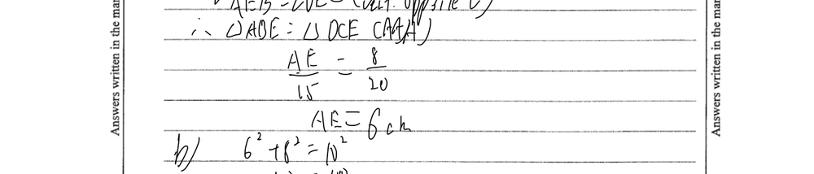
HKDSE Exam Tips & Suggestions
Correct. You have correctly identified the corresponding sides $\frac{AE}{DE} = \frac{BE}{CE}$ and solved for $AE$ accurately.
Step 3
✓ Correct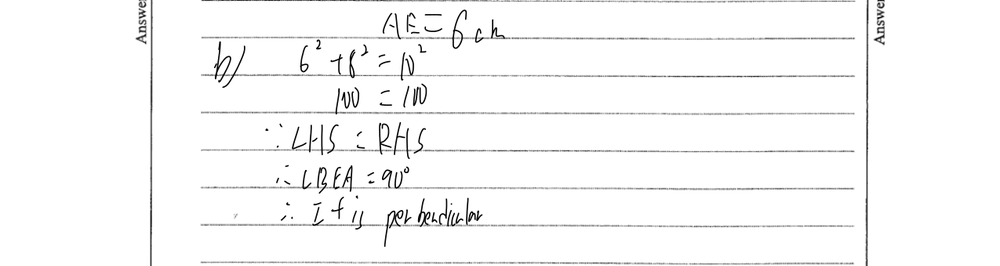
HKDSE Exam Tips & Suggestions
Correct. Your explanation using the converse of Pythagoras' Theorem is logical. To ensure you receive full 'Reason Marks' in Section A of the HKDSE, you should explicitly write the reason: (converse of Pythagoras' Theorem). Also, conclude more formally: 'Since $\angle BEA = 90^\circ$, $AC \perp BD$ (or AC is perpendicular to BD)'.
Page 2 Worksheets
Q13 Circle geometry and sector perimeter
Page 2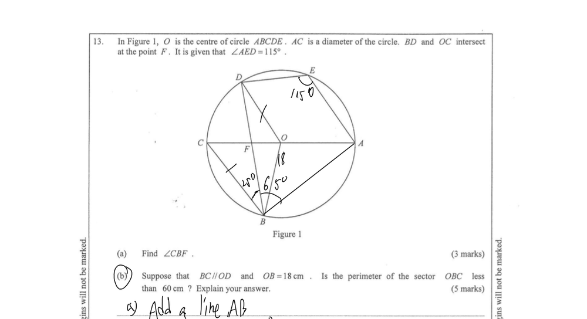
Student Working Steps
Step 1
✓ Correct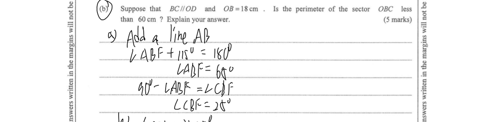
HKDSE Exam Tips & Suggestions
Correct calculation. To improve your score in the HKDSE, you must provide geometric reasons for each step: for $\angle ABF + 115^\circ = 180^\circ$, use `(opp. ∠s, cyclic quad.)`; for $\angle ABC = 90^\circ$, use `(∠ in semi-circle)`.
Step 2
✓ Correct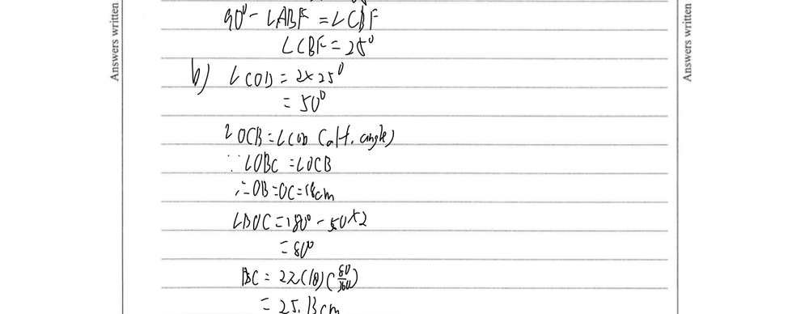
HKDSE Exam Tips & Suggestions
Correct identification of the central angle $\angle BOC = 80^\circ$. Ensure you include all necessary reasons: `(∠ at centre twice ∠ at circumference)`, `(alt. ∠s, BC // OD)`, and `(base ∠s, isos. Δ)`.
Step 3
✓ Correct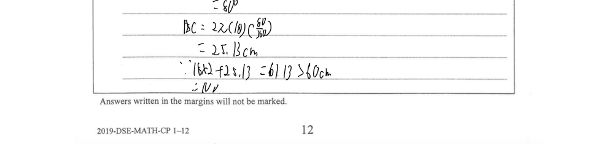
60 cm, the answer is 'No'." class="step-image">
HKDSE Exam Tips & Suggestions
Your calculation of the arc length and the total perimeter of the sector is correct. The conclusion that the perimeter is not less than 60 cm is also accurate. Well done.
Page 3 Worksheets
Q7 Circle geometry (angle properties)
Page 3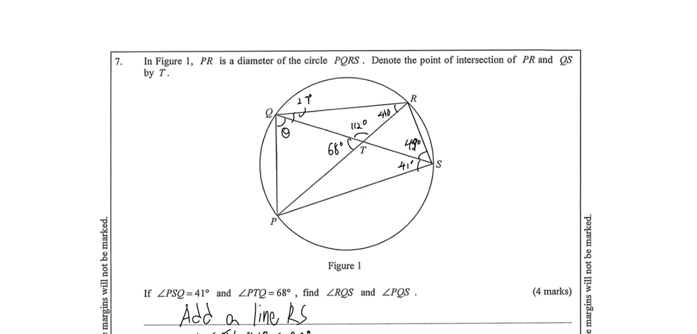
Student Working Steps
Step 1
✓ Correct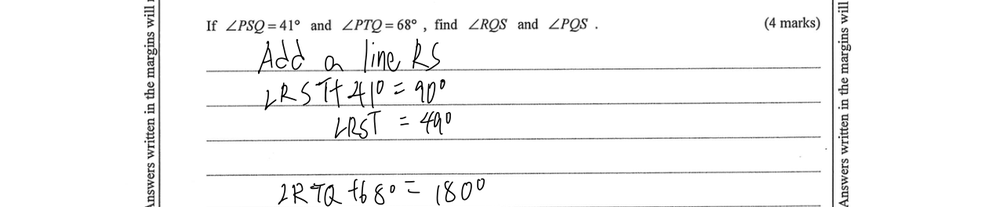
HKDSE Exam Tips & Suggestions
Correct. Since $PR$ is a diameter, $\angle PSR = 90^\circ$. You must explicitly state the geometric reason $(\angle \text{ in semi-circle})$ to earn 'Reason Marks'. Note: 'Add a line RS' is a Redundant Step here because $\angle PSR = 90^\circ$ is a direct property of the diameter $PR$ without needing construction.
Step 2
✓ Correct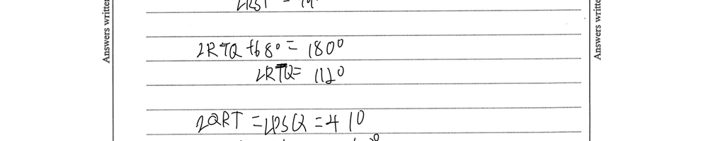
HKDSE Exam Tips & Suggestions
Correct. $\angle RTQ = 180^\circ - 68^\circ = 112^\circ$. Remember to include the reason $(\text{adj. } \angle\text{s on st. line})$.
Step 3
✓ Correct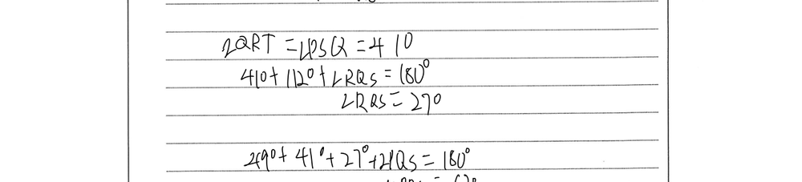
HKDSE Exam Tips & Suggestions
Correct. You correctly used $(\angle\text{s in same segment})$ for $\angle QRP = 41^\circ$ and $(\angle \text{ sum of } \triangle)$ for the triangle $\triangle RQT$. Ensure these abbreviations are used.
Step 4
✓ Correct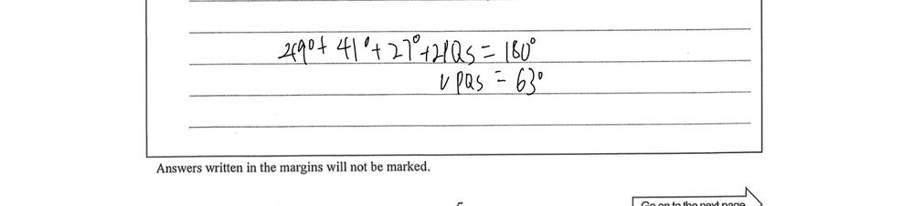
HKDSE Exam Tips & Suggestions
Your logic $49^\circ + 41^\circ + 27^\circ + \angle PQS = 180^\circ$ is correct and can earn full marks if you add the reason $(\text{opp. } \angle\text{s, cyclic quad.})$. Alt. Solution (Shortcut): Since $PR$ is a diameter, $\angle PQR = 90^\circ$ $(\angle \text{ in semi-circle})$. Thus $\angle PQS + 27^\circ = 90^\circ \implies \angle PQS = 63^\circ$.
HKDSE Performance Diagnostics
Student Performance Diagnostics & Revision Guide
HKDSE Compulsory Part⚠️ Identified Weaknesses
- Frequent Omission of Geometric Reasons: The candidate understands circle geometry theorems and carries out calculations correctly, but consistently omits the geometric reasons in parentheses. In the HKDSE exam, this leads to a direct loss of "Reason Marks" (typically 1 mark per reason in Section A). Specific instances:
- Page 1 (Q8b): Proved chords perpendicular using Pythagoras' theorem but omitted the reason
(converse of Pythagoras' Theorem). - Page 2 (Q13a & b): Applied
(opp. ∠s, cyclic quad.),(∠ in semi-circle), and(∠ at centre twice ∠ at circum.)without writing down any justifications. - Page 3 (Q7): Set up the cyclic quadrilateral equation without stating
(opp. ∠s, cyclic quad.).
- Page 1 (Q8b): Proved chords perpendicular using Pythagoras' theorem but omitted the reason
- Redundant Working Steps: The student spends valuable exam time writing down complete multi-line similarity proofs (e.g. Page 1, Q8a proving similarity by AAA) when the question command is only "Write down", which only requires stating the similarity statement itself (e.g., $\triangle ABE \sim \triangle DCE$) without proof.
- Notation Ambiguity (Chord vs. Arc): In Page 2 (Q13b), the candidate uses the notation $BC$ to refer to the arc length when calculating the sector perimeter. In standard HKDSE notation, $BC$ represents the straight-line chord length, whereas the arc should be denoted as $\overset{\frown}{BC}$ or "arc BC". This ambiguity could lead to marks deduction.
🎯 Revision Topics & Focusing Areas
- HKEAA Standard Geometric Reasons:
- Thoroughly revise and memorize the list of HKEAA-approved geometric reasons and their official abbreviations (e.g.
(opp. ∠s, cyclic quad.),(∠ in semi-circle),(converse of Pythagoras' Theorem),(angles in same segment),(alt. ∠s, BC // OD)). - Establish a habit of writing a matching reason in parentheses immediately after every geometric statement.
- Thoroughly revise and memorize the list of HKEAA-approved geometric reasons and their official abbreviations (e.g.
- Exam Command Verb Recognition:
- Understand what HKEAA command verbs imply to manage time effectively: "Write down" means state the answer directly with 0 steps; "Find / Calculate" requires calculation working; "Explain / Prove" requires full working alongside geometric reasons.
- Formal Geometric Notation:
- Differentiate chord lengths from arc lengths using standard notation ($\overset{\frown}{BC}$ or $\text{arc } BC$) and ensure triangles are named in the correct order of corresponding vertices (e.g., $\triangle ABE \sim \triangle DCE$).
HKDSE Practice Zone (Circle Geometry)
PQ1 Similar Triangles & Intersecting Chords
Similar to Q8
Chords $AB$ and $CD$ of a circle intersect at $E$, as shown in the diagram. It is given that $AE = 9\text{ cm}$, $EB = 16\text{ cm}$, and $ED = 12\text{ cm}$.
(a) State a pair of similar triangles in the figure.
(b) Calculate the length of $CE$.
(a) State a pair of similar triangles in the figure.
(b) Calculate the length of $CE$.
✏️ Step-by-Step Solution
-
(a) Identify similar triangles:
Consider $\triangle AEC$ and $\triangle DEB$:
$\angle EAC = \angle EDB$ (∠s in same segment)
$\angle ECA = \angle EBD$ (∠s in same segment)
$\angle AEC = \angle DEB$ (vert. opp. ∠s)
Therefore, $\triangle AEC \sim \triangle DEB$ (AAA). -
(b) Calculate $CE$:
Since $\triangle AEC \sim \triangle DEB$, the ratio of corresponding sides is equal:
$\frac{CE}{BE} = \frac{AE}{DE}$ (corr. sides, ∼ Δs)
Substitute the given lengths:
$\frac{CE}{16} = \frac{9}{12}$
$CE = 16 \times \frac{3}{4} = 12\text{ cm}$.
HKEAA Tip: Note that the "Intersecting Chords Theorem" ($AE \cdot EB = CE \cdot ED$) is NOT an approved geometric reason in the DSE Compulsory Part syllabus. Direct use without proof will result in a loss of method and reason marks. You must establish similar triangles first and use the ratio of corresponding sides to calculate the length.
PQ2 Sector Area & Perimeter
Similar to Q13
The diagram shows a sector $OAB$ with center $O$ and radius $14\text{ cm}$. The central angle $\angle AOB$ is $60^\circ$.
(a) Find the arc length $\overset{\frown}{AB}$ in terms of $\pi$.
(b) Find the perimeter of the sector $OAB$ (correct to 3 significant figures).
(a) Find the arc length $\overset{\frown}{AB}$ in terms of $\pi$.
(b) Find the perimeter of the sector $OAB$ (correct to 3 significant figures).
✏️ Step-by-Step Solution
-
(a) Find the arc length $\overset{\frown}{AB}$:
Formula: $\text{Arc length} = 2\pi r \times \frac{\theta}{360^\circ}$
$\overset{\frown}{AB} = 2 \times \pi \times 14 \times \frac{60^\circ}{360^\circ}$
$\overset{\frown}{AB} = 28\pi \times \frac{1}{6} = \frac{14\pi}{3}\text{ cm}$. -
(b) Find the perimeter of sector $OAB$:
$\text{Perimeter} = OA + OB + \overset{\frown}{AB}$
$\text{Perimeter} = 14 + 14 + \frac{14\pi}{3}$
$\text{Perimeter} = 28 + 14.661 = 42.661\text{ cm} \approx 42.7\text{ cm}$ (correct to 3 sig. figs.).
HKEAA Tip: Make sure to differentiate between the perimeter of the sector ($OA + OB + \text{arc } AB$) and the perimeter of the segment bounded by chord $AB$ and arc $AB$ ($AB + \text{arc } AB$). Read carefully!
PQ3 Angle Properties of Circles
Similar to Q7
In the diagram, $AC$ is a diameter of the circle with center $O$. $B$ and $D$ are points on the circumference. It is given that $\angle BAC = 55^\circ$.
(a) Find $\angle BDC$, giving geometric reasons.
(b) Find $\angle ADB$, giving geometric reasons.
(a) Find $\angle BDC$, giving geometric reasons.
(b) Find $\angle ADB$, giving geometric reasons.
✏️ Step-by-Step Solution
-
(a) Find $\angle BDC$:
Observe that $\angle BDC$ and $\angle BAC$ are angles subtended by the same arc $BC$.
Therefore, $\angle BDC = \angle BAC = 55^\circ$ (∠s in same segment). -
(b) Find $\angle ADB$:
Since $AC$ is a diameter, the angle subtended on the circumference is a right angle:
$\angle ADC = 90^\circ$ (∠ in semi-circle)
From the diagram:
$\angle ADB = \angle ADC - \angle BDC$
$\angle ADB = 90^\circ - 55^\circ = 35^\circ$.
Alternative Method:
$\angle ACB = 180^\circ - 90^\circ - 55^\circ = 35^\circ$ (∠ sum of Δ, using ∠ABC = 90° from ∠ in semi-circle)
Then, $\angle ADB = \angle ACB = 35^\circ$ (∠s in same segment).